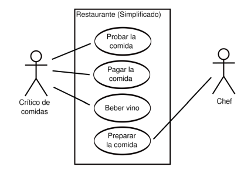
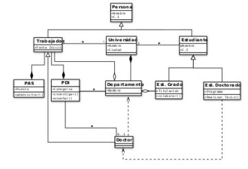

El análisis formal de conceptos proporciona una metodología para derivar una jerarquía de conceptos (como una ontología) a partir de una colección de objetos y las propiedades que verifican.
Modelo de Analisis
El modelo de análisis describe la estructura del sistema o aplicación que está modelando. Consta de diagramas de clase y de diagramas de secuencia que describe la implementación lógica de los requisitos funcionales identificados en el modelo de caso de uso.
Diagrama de casos de uso
El diagrama de caso de uso es un tipo de diagrama UML de comportamiento y se usa frecuentemente para analizar varios sistemas. Permiten visualizar los diferentes tipos de roles en un sistema y cómo esos roles interactúan con el sistema.
Características:
Un diagrama de caso de uso puede incluir varios casos de uso y las relaciones entre casos de uso y las personas, los grupos o los sistemas que interactúan para llevar a cabo el caso de uso. Puede crear un artefacto de actor que proporcione detalles textuales de un actor en un diagrama de caso de uso.
Funcionalidad:
Un caso de uso es un artefacto que define una secuencia de acciones que da lugar
a un resultado de valor observable. Los casos de uso proporcionan una estructura
para expresar requisitos funcionales en el contexto de procesos empresariales y
de sistema. Los casos de uso pueden representarse como un elemento gráfico en
un diagrama y como una especificación de caso de uso en un documento textual.
Aplicaciones:
El diagrama de casos de uso es una forma de diagrama de comportamiento en
lenguaje de modelado unificado (UML, del inglés Unified Modelling Language), con
la que se representan procesos empresariales, así como sistemas y procesos de
programación orientada a objetos.

Diagrama de clases
Los diagramas de clase describen los tipos de objetos de un sistema, así como los distintos tipos de relaciones que pueden existir entre ellos.
Características:
Los diagramas de clases describen la estructura estática de un sistema. Las cosas que existen y que nos rodean se agrupan naturalmente en categorías. Una clase es una categoría o grupo de cosas que tienen atributos (propiedades) y acciones similares.
Funcionalidad:
Los diagramas de clase describen los tipos de objetos de un sistema, así como
los distintos tipos de relaciones que pueden existir entre ellos.
Aplicaciones:
Un diagrama de clases es una estructura estática que se usa para mostrar los
tipos de relaciones entre los objetos que se están programando. También es
una buena manera de mostrar la estructura de clases en un sistema.
